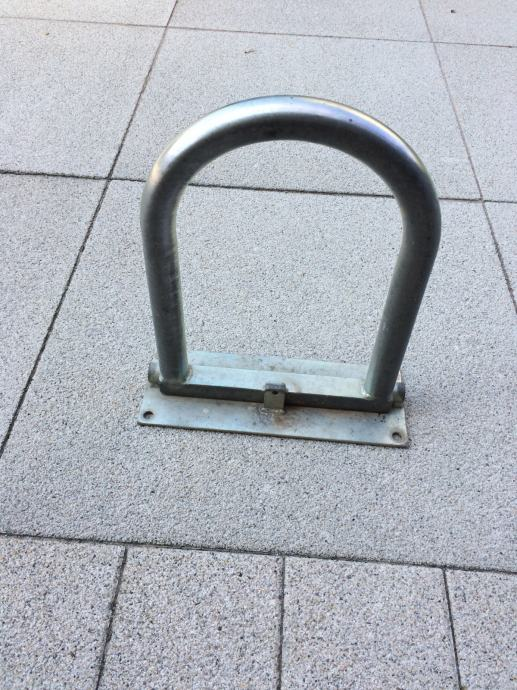
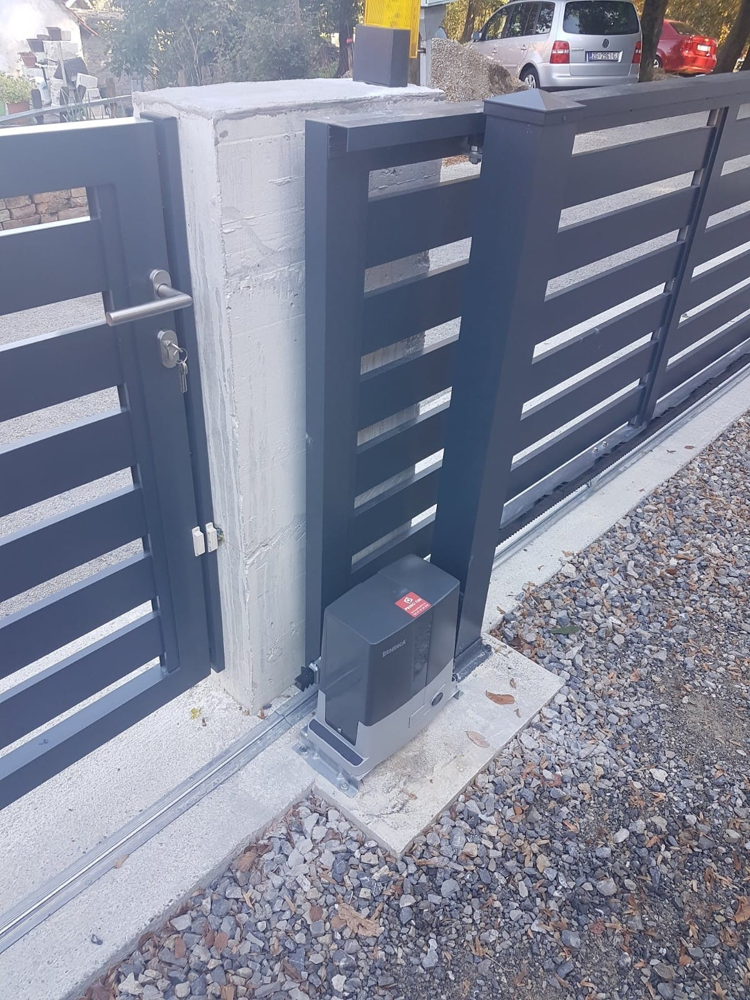
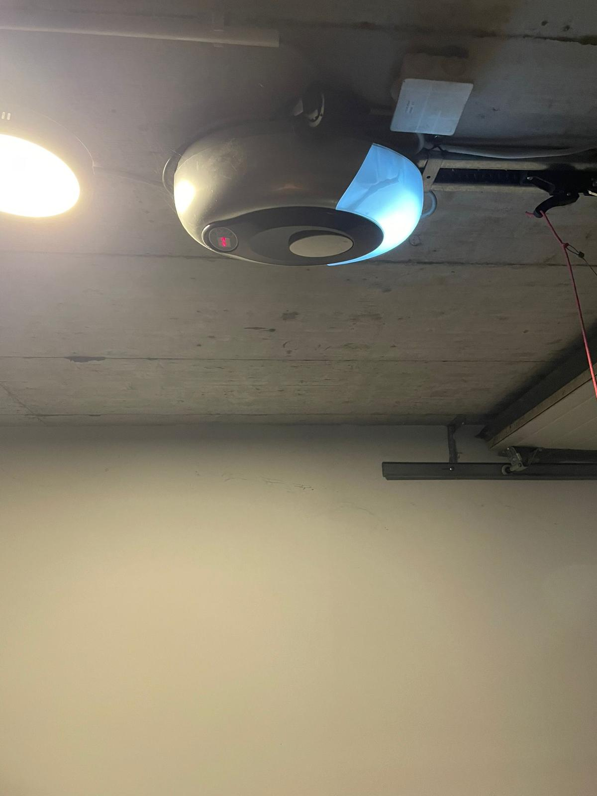

Zaštitari parkinga
Želite sačuvati svoje parkirno mjesto? Najefikasnije i najjeftinije rješenje su upravo čuvari parkinga (parking barijere). Zbog svoje jednostavnosti rukovanja, niske cijene, kvalitete i pouzdanosti, čuvari parkinga nameću se kao pravi izbor za riješavanje probema kod osiguranja privatnog parking mjesta

Motori za dvorišna vrata
Motori za garažna vrata renomiranim talijanskih proizvođača Beninca, Came, Bft i Nice nude široku paletu proizvoda. Uz jamstvo od 36 mjeseci možete naći motorne pogone za sve vrste garažnih vrata. Njemački proizvođač nudi motore s jamstvom od čak 60 mjeseci. Namjena motora za kućnu ili industrijsku upotrebu.

Motori za garažna vrata i paneli
Motori za garažna vrata renomiranim talijanskih proizvođača Beninca, Came, Bft i Nice nude široku paletu proizvoda. Uz jamstvo od 36 mjeseci možete naći motorne pogone za sve vrste garažnih vrata. Njemački proizvođač nudi motore s jamstvom od čak 60 mjeseci. Namjena motora za kućnu ili industrijsku upotrebu.